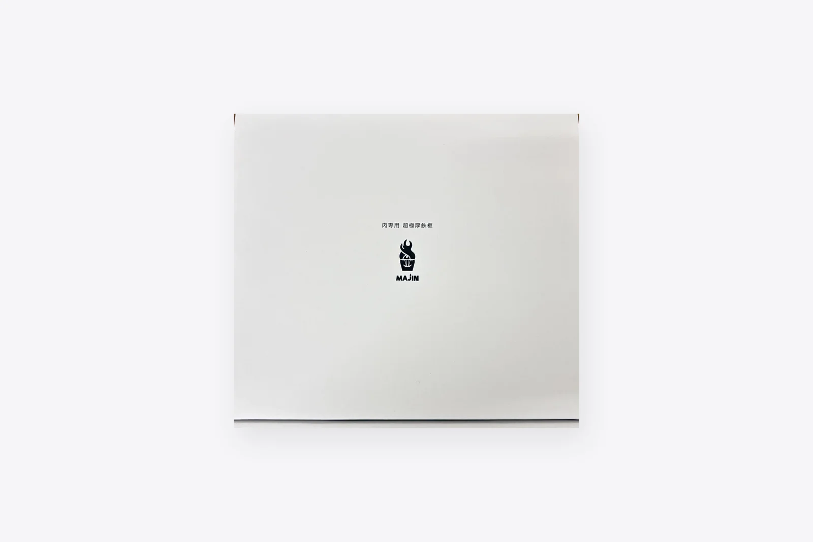

About MAJIN
肉専用超極厚鉄板MAJINとは
肉専用 超極厚鉄板「MAJIN」
MAJINは
鉄（JIS規格 SS400黒皮）の
※OEMや

Feature
MAJIN 19mm プロ の特長

他には無い圧倒的な重厚さ
厚みが

高い蓄熱性
厚みが

シンプルなフラットデザイン
鉄板は
※重量が
ラインナップ

19×150×240mm・5kg
11,000円（税込）
専門店レベルの

12×170×240mm・4kg
11,000円（税込）
屋内でも

10×120×170mm・2kg
11,000円（税込）
ソロキャンプでの

4.5×260×310mm・2.5kg
16,500円（税込）
錆びに
ステンレス製・レーザーカット。

Spec
製品概要
| MAJIN 19mm プロ | 19×150×240mm5kg・11,000円 |
|---|---|
| MAJIN 12mm 曲げ | 12×170×240mm4kg・11,000円 |
| MAJIN 10mm 取手付き | 10×120×170mm2kg・11,000円 |
| MAJIN-S 4.5mm 曲げ | 4.5×260×310mm2.5kg・16,500円 |
| 材質 | 鉄（JIS規格 SS400黒皮）MAJIN-S は |
寸法は
Scene
好きな場所で、本格的な肉焼きを


Caution
ご使用上の注意（必ずお読みください）
加熱器具の
- カセットこんろ本体や
ボンベカバーを 覆う 状態では 使用しないでください。 ボンベが 加熱され、 破裂・火災の 原因に なります。 - カセットこんろを
2台以上 並べて 使用しないでください。 隣の こんろの ボンベが 加熱され、 事故に つながります。 - 鉄板が
こんろの 五徳からは み出す 場合は 使用しないでください。 - 使用中および
使用直後は 高温です。 必ず 耐熱グローブを ご使用ください。
これらは
How to use
ご利用方法
鉄の

乾かす ご購入後は
食器用洗剤等で 洗って 十分に 乾かしてください。 
なじませる 乾きましたら
鉄板に 薄く 油を 塗り、 加熱ください。 十分に 加熱されましたら クズ野菜などを 軽く 炒めてください。 
クズ野菜を
取り除き、 十分に 鉄板が 冷めた ところで 表面の 汚れを 水洗いし、 再度 薄く 油を 塗って 加熱ください。 これで 準備は 完了です。 
洗剤を
使わずたわし等で 汚れを 落としてください。 乾きましたら、 薄く 油を 塗り、 新聞紙に 包んで 保管ください。
MAJIN-S（ステンレス）のお手入れ
お手入れ方法は
Making
製造過程
注文ごとに

①大手製鉄メーカーより、
厚板鉄板の 原板を 仕入れます。 ②製品寸法に 合わせて 罫書きと 呼ばれる、 溶断ラインの 線引きを 1枚ごとに 行います。 ③職人が 1枚1枚ガス溶断を 行っていきます。 ガス溶断を 用いる ことで、 一般流通している 鉄板では 困難な 厚みの ある 鉄板を 生み出すことが 可能と なって おります。 
刻印 ④1枚ごとに
手打ちにて、 ロゴマークの 刻印を 行っていきます。 
⑤カットされた
鉄板の 溶断面を 丁寧に バリ取りいたします。 ⑥また 表面の 汚れやさびを 除去する ため、 やすり掛けを 行います。 
⑦社内にてオリジナルコットンバッグと
共に 梱包して 出荷します。
9/30撮影の
Movie
MAJIN ムービー
現行サイトの
FAQ
FAQ
厚板とは何ですか？
厚みが
黒皮鉄板とは何ですか？
製鉄所にて
ガス溶断とは何ですか？
ガスで
オーダーメイドは可能ですか？
厚み、
現地引き取り、見学は可能ですか？
日時に
Notes
ご注意事項
- 鉄の
モデルは 原板から カットしており、 表面処理は 行っていない 無塗装の 黒皮鋼板です。 その ため 1枚1枚の 表情が 違います。 細かな 傷や 黒皮の 色ムラなどが ございますので ご了承ください。 - 未加熱時の
持ち運びには 作業用手袋を、 加熱中および加熱直後には 必ず 耐熱グローブを ご使用ください。 軍手は 熱を 通すため、 加熱時には 使用しないでください。 - 製品は
非常に 重いため 落下等には 十分ご注意ください。 また、 「徒歩での」持ち運びには 適して おりませんので ご自宅や 車移動の オートキャンプで ご利用を 予定している 方等に お勧めしております。 - 通常の
鉄板よりも 厚みが ある ため、 熱されるまでに 一定の 時間が かかります。 お時間の 余裕が ある 際に、 じっくりと お楽しみください。 - 製品は
高温に なる ため、 使用環境には ご注意いただきながら ご利用ください。 製品温度が 下がるまでは 触れないようにしてください。 また、 カセットボンベ等に 製品が 触れないよう ご注意ください。 - フラットデザインの
モデル （19mm プロ）は、 油がはねたり、 落ちたりする 可能性が ございます。 加熱器具の 周囲や 下に、 新聞紙・キッチンペーパーなどの 可燃物を 置かないでください。 油が 染み込んだ 紙類は 発火の 原因に なります。 油受けが 必要な 場合は、 加熱器具メーカーが 指定する 不燃性・耐熱性の 受け皿を ご使用ください。 - ご注文を
頂いてからの 製作に なります。 発送まで 1週間前後の お時間を 頂戴します。 発送は 平日のみ 行って おります。 ご了承ください。
Shop
ご購入はこちら
MAJINおよび各種鉄板・鋼材製品は、
BBQ鉄板・金床・敷鉄板などの

Contact
板厚・寸法・
図面が